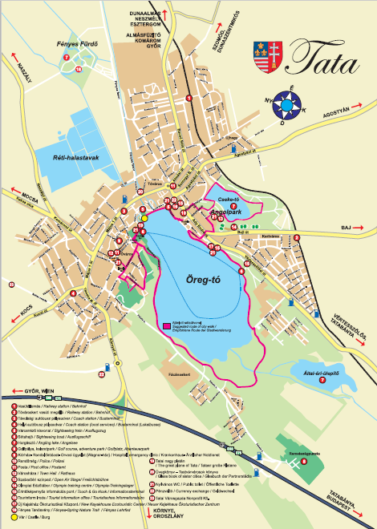

Oldal navigáció
+36-34-111-222
Asztalfoglalás: +36-20-333-444| Nap | Nyitás | Zárás |
|---|---|---|
| © 2020 június. A változtatás jogát fenntartjuk | ||
| Hétfő | Szünnap | |
| Kedd | 14:00 | 20:00 |
| Szerda | 14:00 | 20:00 |
| Csütörtök | 14:00 | 20:00 |
| Péntek | 14:00 | 20:00 |
| Szombat | 10:00 | 22:00 |
| Vasárnap | 21:00 | |
M1 autópálya felől autóval: térj le és be.
